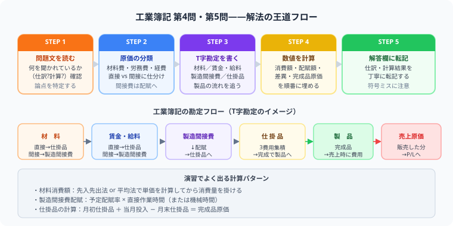

日商簿記2級 | 公開：2026年5月9日 | 更新：2026年6月30日
簿記2級 工業簿記の演習ロードマップ｜材料費からCVPまでの解き方
著者：大谷 一輝（関西の大学3回生・日商簿記1級勉強中）
大
著者・大谷からひとこと
こんにちは、大谷です！
日商簿記2級の壁にぶつかる人の多くは、商業簿記の「連結会計」などの難しさに絶望して「うわっ、なんじゃこりゃ、もう諦めようかな……」と心が折れそうになります（笑）。
でも、ここで断言します。2級合格の本当のカギは【工業簿記】にあります！
工業簿記は、最初は見慣れない用語ばかりで戸惑いますが、本質は「原価がどこから来てどこへ流れるか」を追いかけるだけの単純なパズルです。一度型を覚えれば、本番の試験で【40点満点】を本気で狙える超・確変ボーナス科目なんです！
僕が3,000時間の勉強の中で確信した「最短で工業簿記を満点にするロードマップ」を優しくナビゲートします。
また、モチベーション維持のために、記事の末尾のほうにある【いいねボタン】をポチッと押してもらえると、めちゃくちゃ嬉しいです！
先に結論：工業簿記は論点をバラバラに覚えると必ず詰まります。「材料費→労務費→経費→製造間接費→完成品→売上原価」という原価の流れを1本のルートとして追いかける習慣を作ることが、満点への最短ルートです。
工業簿記の演習順序

図：問題読む→原価分類→T字勘定→計算→転記の5ステップと材料費→製品→売上原価の勘定フロー
工業簿記は「勘定の流れ」さえ頭に入れれば、問題のどこから解けばよいかが自然に見えてきます。各論点の個別解説記事へのリンクを番号順に並べたので、弱い論点から優先的に読んでください。
「0」から順番に進めなくてもOK：もし製造間接費や総合原価計算が特に苦手なら、そのカードだけ先にクリックして読んでも大丈夫です。各記事は単独でも理解できるよう構成してあります。ただし初めて工業簿記を勉強する方は必ず「0：工業簿記とは？」から読んでください。全体像がないまま材料費から入ると必ず迷子になります。
第4問・第5問で点を取る考え方
工業簿記は、商業簿記よりも型が決まりやすい科目です。第4問・第5問では、資料の数字をどこに入れるかを素早く判断できれば、安定して高得点が出せます。
3大魔法陣（下書きの下書き）を覚えれば公式は不要！
1
総合原価計算の【T字ボックス】
仕掛品勘定をT字に書いて、左に月初仕掛品＋当期投入、右に完成品＋月末仕掛品を放り込む。完成品換算量を使って按分するだけで答えが出る。
2
標準原価計算の【シュラッター図】
固定費の製造間接費差異を分解するときに使う2次元の図。縦軸に金額・横軸に操業度を取り、予算・実際・標準の3点を打つだけで能率差異・操業度差異が視覚的に確定する。
3
CVP分析の【変動損益計算書】
売上高・変動費・貢献利益・固定費・営業利益の5行を書いて数字を縦に埋めるだけ。損益分岐点の公式は「固定費 ÷ 貢献利益率」だが、この表があれば公式を覚えなくても方程式を立てて解ける。
工業簿記を解くときは、公式の丸暗記は一切不要です。この3大魔法陣を自分の手で素早く書けるようになることが合格への最短ルートです！数字を放り込むだけで答えが勝手に出てきます。
- 資料を読んだら、まず「材料・労務費・経費・製造間接費」に分類する
- 製造間接費は予定配賦率と実際発生額をきっちり分ける
- 個別原価計算は製造指図書ごと、総合原価計算は完成品と月末仕掛品の按分が設問の中心
- 標準原価計算は「標準」と「実際」の差を数量差異・価格差異に分解する
- CVPは「貢献利益＝売上高－変動費」を変動損益計算書に書き起こしてから解く
よくある失点パターン
工業簿記で点数を落とす受験生のほとんどは、以下の4パターンのどれかにハマっています。自分に思い当たるものがあれば、そこから先に潰しましょう。
⚠ 罠①：直接費と間接費を混ぜてしまう
「製品に直接ひもづく費用か、間接的にかかった費用か」で必ず区別する。工場で消費した電力は間接費・製品に貼り付けられた素材費は直接費、というように一つひとつ判断してください。
⚠ 罠②：予定配賦と実際配賦を混同する
「予定配賦率×実際操業度」が予定配賦額。問題文に「予定配賦率」が書いてあれば必ずそちらを使う。問題の指示を読み飛ばして実際発生額をそのまま使うのが最多ミスです。
⚠ 罠③：月末仕掛品を無視する
総合原価計算では完成品換算量を計算してから按分しないと、月末仕掛品の加工費が正確に求められません。「完成品換算量 ＝ 月末仕掛品数量 × 加工進捗度」を手書きの下書きに必ずメモする習慣を。
⚠ 罠④：CVPで固定費と変動費を逆にする
「売上が増えても増えない費用 ＝ 固定費」「売上に比例して増える費用 ＝ 変動費」。問題文に「○○費のうち変動費率は△%」と書いてあれば、変動損益計算書を書く前に変動費・固定費に分解してから進める。
演習のコツ：1問解いたら、答え合わせだけで終わらせず「どの資料をどの箱（T字ボックス・シュラッター図・変動損益計算書）に入れたか」を声に出して確認してください。工業簿記は、解いた後の整理で一気に伸びます。
まとめ
- 工業簿記は「原価の流れを追う科目」——どこから来てどこへ行くかが見えれば怖くない
- 演習は「工業簿記とは？」→ 材料費 → 労務費 → 経費 → 製造間接費 → 個別・総合・標準 → CVPの順で進める
- 3大魔法陣（T字ボックス・シュラッター図・変動損益計算書）を手書きで素早く書けるよう練習する
- 直接費・間接費の区別と予定配賦の仕組みを押さえれば、第4問はほぼ必ず全問取れる
- 総合原価計算の月末仕掛品換算量と標準原価計算の差異分析を繰り返せば、第5問も安定する
⚔ 工業簿記の原価の流れを毎日記録しよう
スタディクエストなら、工業簿記の演習時間と進捗を経験値として記録できます。
無料で学習記録を始める →